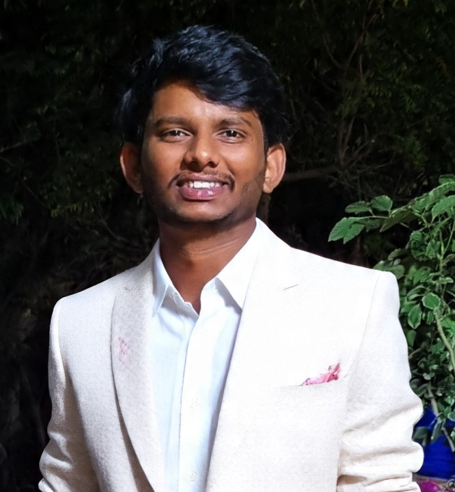

Data-Driven Strategist | Data Analyst | Content Creator with Expertise in Data Analysis (Python, SQL, Power BI) & Visual Storytelling | Chemical Engineering Undergrad at NITW
View My Work
A detail-oriented Chemical Engineering undergraduate from NIT Warangal with a strong passion for data. Proficient in Python, SQL, Power BI, and IBM Cognos Analytics, with hands-on experience in developing end-to-end data projects. Eager to leverage my analytical skills to uncover insights and solve complex, real-world problems.
Knowledgeable in developing with and utilizing a variety of modern AI tools.
A group project to create a centralized database for NIT Warangal students. Designed and developed a relational database using SQL to manage information on mess, hostel, library, and academics. Involved creating an ER diagram and normalizing the database.
🖧 View on GitHubThis project analyzes online purchase trends during Diwali. Leveraged Python with Pandas, Matplotlib, and Seaborn to process and visualize data, concluding key insights on customer demographics and product popularity.
🖧 View on GitHubGRE Score
Duolingo English Test Score
Science and Hobbies Club, NITW
2023-2024I have been actively involved in the Science and Hobbies Club since 2021, progressing through various leadership roles. I began as an Executive Member, contributing to poster design and event execution. In 2022, I was promoted to Additional Secretary, taking on greater responsibilities in event coordination. Finally, in August 2023, I was elected as Secretary, a role I held until May 2024. Successfully spearheaded event planning and execution, overseeing diverse activities like "Chase the Destiny" (150+ participants), Double Scribble, Kirigami, and Mini Game Fair. Initiated and managed a successful weekly science facts magazine on Instagram, personally contributing to content and poster design. This role significantly honed skills in team management, decision-making, and large-scale event organization, contributing to the club's prominent standing within the institute.
Literature and Debating Club, NITW
2023 – 2024Advanced through Executive Member and Secretary roles to become Additional Secretary. Organized numerous debates, literary contests, and unique events such as parliamentary youth debates involving multiple languages (Telugu, Hindi, English). Developed and conducted innovative literary activities like meme contests and Telugu storytelling/speech competitions, evaluating participants on confidence, content, and body language. This experience sharpened communication, analytical, and event management abilities, fostering a vibrant intellectual environment.
SPRING SPREE
2024Entrusted with the comprehensive management of guest artists for Spring Spree 2024. Responsibilities spanned meticulous guest arrival coordination, ensuring comfortable hospitality and accommodation, overseeing performance logistics (including sound systems), and managing seamless departure arrangements, including airport transfers. This high-pressure role cultivated unparalleled resilience, refined multi-team management capabilities, and demonstrated expertise in executing complex, large-scale projects flawlessly, contributing significantly to the festival's success.
SPRING SPREE
2023Instrumental in ensuring the seamless execution of Spring Spree 2023 by coordinating and delivering all required logistics. This included timely provision of event materials, equipment, and hospitality resources for various club events and festival activities, ensuring smooth operations and a positive experience for participants and organizers alike.
TECHNOZION
2022Spearheaded extensive publicity efforts for Technozion 2022, South India's largest technical fest. This involved promoting the festival both on and off-campus through direct engagement with other universities and colleges, conducting online and offline meetings, and collaborating with faculty from various institutions to boost student participation significantly. This role enhanced outreach, communication, and promotional strategy skills.
Outside of my technical work, I run an Instagram page called Melodicales. It's a space where I share a blend of recent and classic Telugu blockbuster songs paired with motivational quotes and personal experiences to spread positivity. It's my way of connecting with people through music and inspiration.
If you enjoy the content, please give the page a follow!
Follow @melodicalesFor a comprehensive overview of my academic background and professional experience.